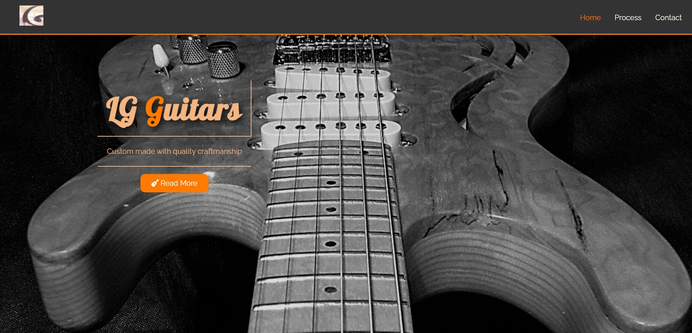

-PhotoRoom.png-PhotoRoom.png)
My Mobile Project
A re-creation of my own mobile phone. What started as some practice whilst working away has turned into a full project. Using mainly HTML & CSS I have re-created my own phone, also using some Javascript. This has been great for honing my CSS skills, and I will also be adding as much functionality as possible. Ongoing.....
My Projects
LG Guitars
This is the first website I ever created and hosted myself. Using HTML, CSS & Javascript, this is a website showcasing my Dad's homemade guitars. I learnt a lot of CSS through building this website and about responsive design.

×
Homepage of LG Guitars